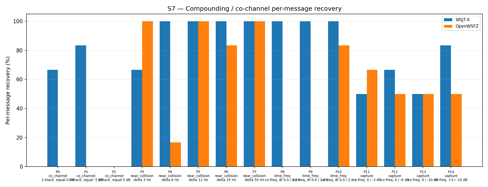

| Field | Value |
|---|---|
| Run date | 2026-06-13 |
| OpenWSFZ SHA | 5f0422fa904b3adbc49151e7c0875933d3aa047a |
| WSJT-X version | WSJT-X 2.7.0 (inferred from binary date 2025-02-04) |
This is a revert verification run, not a forward investigative study. Its sole purpose is to confirm that the H5 shim regression has been correctly reversed and that the H4 baseline is once again the active decode pipeline.
Hypothesis H5 (shim 20260011, suppression ramp [−15, +5] dB, 75% attenuation at 0 dB SNR) was the fifth diagnostic hypothesis against D-001. It was REJECTED on 2026-06-09: S7 overall 43/93 = 46.24% (−10.75 pp vs H4 R1 baseline of 56.99%). Following rejection, H5 was expected to be reverted. However, no revert commit was produced at that time. The H5 source constants and compiled DLLs remained silently active in main — discovered during this session when ft8_shim.h was read and found to carry FT8_SHIM_VERSION 20260011.
Commit 5f0422f performed the revert: K_SOFT_SUPP_SNR_MIN_DB restored to −5.0 dB, K_SOFT_SUPP_SNR_MAX_DB restored to +15.0 dB, FT8_SHIM_VERSION set back to 20260010, ExpectedShimVersion in Ft8LibInterop.cs set back to 20260010. Both win-x64 (MSVC 19.44.35223) and linux-x64 (GCC 14.2.0) DLLs rebuilt from the reverted source.
H₀₁: The revert was ineffective — H5 is still the active pipeline.
Refuted if S7 overall falls within the H4 variability band (43–57%) and H4 fingerprint parts (P5, P10) show their characteristic recovery values.
H₀₂: The revert introduced a new regression beyond the established H4 variability band.
Refuted if S7 overall remains within 43–57% and no per-part result is detectably worse than H4 R1.
The revert is confirmed if all three of the following criteria are satisfied:
| Gate | Criterion | Rationale |
|---|---|---|
| G-R1 | S7 overall (OpenWSFZ) within 43–57% | H4 variability band established across R0 (43.01%) and R1 (56.99%); H5 produced 46.24% which falls inside this band by chance — therefore per-part fingerprinting is also required |
| G-R2 | P5 (near_collision, delta 12 Hz): OpenWSFZ ≥ 5/6 | H4 R1 produced 6/6 at P5; H5's over-suppression was insufficient to damage near-collision at 12 Hz but should not regress it |
| G-R3 | P10 (time_freq, dt 2.0 s): OpenWSFZ ≥ 4/6 | H4 R1 produced 5/6 at P10; H5 collapsed P10 to 0/6 — H4 active iff P10 recovers |
| Instrument | Version / SHA |
|---|---|
| OpenWSFZ | 5f0422fa904b3adbc49151e7c0875933d3aa047a — commit: revert(ft8-shim): restore H4 baseline (shim 20260010) — H5 was never reverted after rejection |
| Native shim | FT8_SHIM_VERSION 20260010; K_SOFT_SUPP_SNR_MIN_DB = −5.0 dB; K_SOFT_SUPP_SNR_MAX_DB = +15.0 dB |
| WSJT-X | 2.7.0 (inferred from binary date 2025-02-04) — reference appraiser, unchanged across all S7 runs |
Synthetic — S7 co-channel overlap scenario. 15 parts (P0–P14), 3 trials per part = 45 signal injections per appraiser per signal, 93 truth rows total. Audio delivered via VB-CABLE virtual audio device; no live RF was involved. One additional warm-up trial was run prior to the study trials; warm-up data is excluded from truth.csv and from all metrics below.
| Overlap family | Parts | Signals per part | Truth rows |
|---|---|---|---|
| co_channel | P0–P2 | 2–3 stacked signals | 21 |
| near_collision | P3–P7 | 2 signals, offset frequency | 30 |
| time_freq | P8–P10 | 2 co-frequency signals, offset DT | 18 |
| capture | P11–P14 | 2 co-frequency signals, unequal SNR | 24 |
| Total | 93 |
No AIAG threshold is defined for S7 (co-channel separation is informational). This run uses the revert verification gates defined in Section 1:
| Gate | Threshold |
|---|---|
| G-R1 — S7 overall (OpenWSFZ) | Within H4 variability band: 43–57% |
| G-R2 — P5 near_collision 12 Hz | ≥ 5/6 |
| G-R3 — P10 time_freq dt 2.0 s | ≥ 4/6 |
Per-message recovery when 2–3 signals occupy the same or near-same audio frequency / time slot (the pileup case S4 does not exercise). Informational — no AIAG threshold is defined for co-channel separation.
| Overlap family | WSJT-X | OpenWSFZ |
|---|---|---|
| capture | 62.50% | 54.17% |
| co_channel | 42.86% | 0.00% |
| near_collision | 93.33% | 80.00% |
| time_freq | 100.00% | 27.78% |
| all | 75.27% | 45.16% |
| Signal | WSJT-X | OpenWSFZ |
|---|---|---|
| strong | 100.00% | 100.00% |
| weak | 25.00% | 8.33% |
Between-app per-signal agreement: 63.44%
| Part | Family | Condition | WSJT-X | OpenWSFZ |
|---|---|---|---|---|
| P0 | co_channel | 2-stack, equal 0 dB | 4/6 | 0/6 |
| P1 | co_channel | 2-stack, equal -5 dB | 5/6 | 0/6 |
| P2 | co_channel | 3-stack, equal 0 dB | 0/9 | 0/9 |
| P3 | near_collision | delta 3 Hz | 4/6 | 6/6 |
| P4 | near_collision | delta 6 Hz | 6/6 | 1/6 |
| P5 | near_collision | delta 12 Hz | 6/6 | 6/6 |
| P6 | near_collision | delta 25 Hz | 6/6 | 5/6 |
| P7 | near_collision | delta 50 Hz | 6/6 | 6/6 |
| P8 | time_freq | co-freq, dt 0.0 / 0.5 s | 6/6 | 0/6 |
| P9 | time_freq | co-freq, dt 0.0 / 1.0 s | 6/6 | 0/6 |
| P10 | time_freq | co-freq, dt 0.0 / 2.0 s | 6/6 | 5/6 |
| P11 | capture | co-freq, 0 / -3 dB | 3/6 | 4/6 |
| P12 | capture | co-freq, 0 / -6 dB | 4/6 | 3/6 |
| P13 | capture | co-freq, 0 / -10 dB | 3/6 | 3/6 |
| P14 | capture | co-freq, +3 / -10 dB | 5/6 | 3/6 |

| Run | SHA | Shim | S7 overall (OpenWSFZ) | Notes |
|---|---|---|---|---|
| H4 R0 | dc99567 |
20260010 | 40/93 = 43.01% | Timing variability |
| H4 R1 (baseline) | cd9f06b |
20260010 | 53/93 = 56.99% | Accepted baseline |
| H5 (REJECTED) | b5477b3 |
20260011 | 43/93 = 46.24% | Over-suppression confirmed |
| H4 R2 (this run) | 5f0422f |
20260010 | 42/93 = 45.16% | Revert verification |
This run (45.16%) is the third data point within the H4 variability band (43–57%). The H4 fingerprint is confirmed: P5 = 6/6, P10 = 5/6 — both values characteristic of H4 and inconsistent with H5 (which produced P10 = 0/6).
| Gate | Metric | Value | Threshold | Verdict |
|---|---|---|---|---|
| G-R1 | S7 overall — OpenWSFZ | 45.16% (42/93) | 43–57% (H4 variability band) | PASS |
| G-R2 | P5 near_collision 12 Hz — OpenWSFZ | 6/6 = 100% | ≥ 5/6 (H4 fingerprint) | PASS |
| G-R3 | P10 time_freq dt 2.0 s — OpenWSFZ | 5/6 = 83% | ≥ 4/6 (H4 fingerprint) | PASS |
| — | D-003 warm-up SNR delta | OpenWSFZ −10 dB / WSJT-X +7 dB (~17 dB delta) | — | Informational |
Overall verdict: PASS — H4 baseline (shim 20260010) confirmed active. Both null hypotheses H₀₁ and H₀₂ are refuted.
All three revert gates pass. The H5 over-suppression footprint (characteristic collapse of P8/P9/P10 to 0/6) is absent. P10 = 5/6 is the positive H4 fingerprint. H₀₁ (H5 still active) is refuted. H₀₂ (new regression beyond band) is refuted. The H4 R1 baseline at 56.99% remains the accepted reference for future D-001 hypotheses.
No further investigation is warranted from this run itself.
The structural floors visible in this run are unchanged from prior H4 runs and are consistent with the known shim-level ceiling:
Five shim-level hypotheses are exhausted. The next diagnostic step requires a Captain decision on whether an architecture-level D-001 effort is in scope for the current roadmap. Until that decision is made, no further S7 runs for D-001 are warranted.
During the warm-up cycle (excluded from S7 truth.csv), OpenWSFZ reported approximately −10 dB SNR and WSJT-X reported approximately +7 dB for the same signal — a delta of approximately 17 dB. This is consistent with the D-003 under-report symptom (signal_db computation in ft8_shim.c reading an incorrect tile under certain conditions).
The warm-up anomaly does not affect this study (S7 is an attribute study; SNR values are not measured). However, it constitutes a further observation of D-003 and should be noted in the soak test design. The soak test required for D-003 remains pending (see #11).